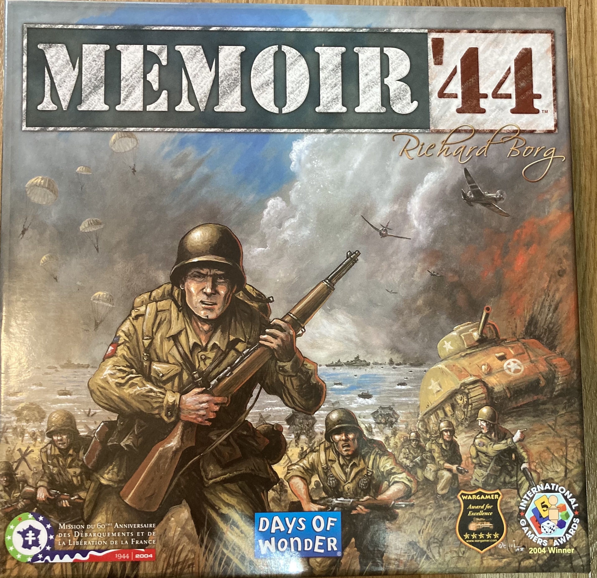
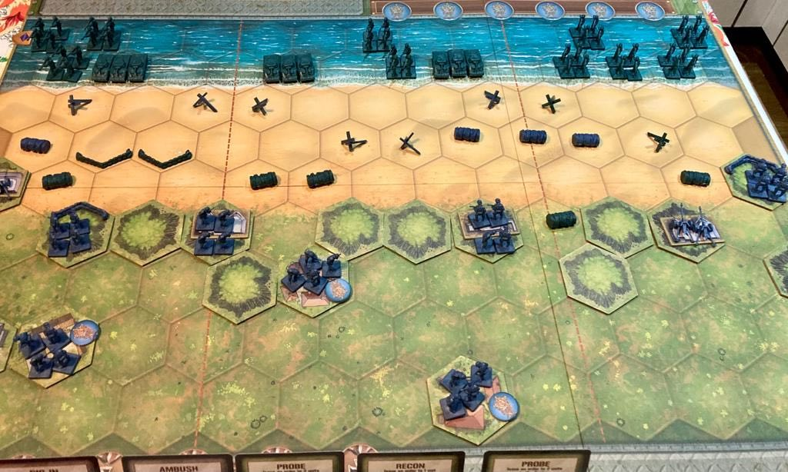
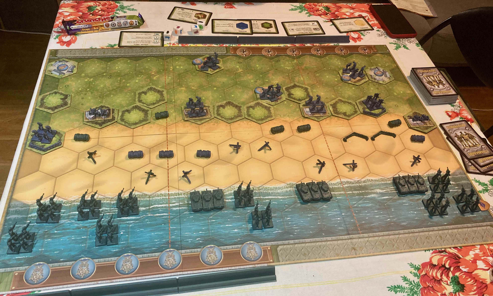
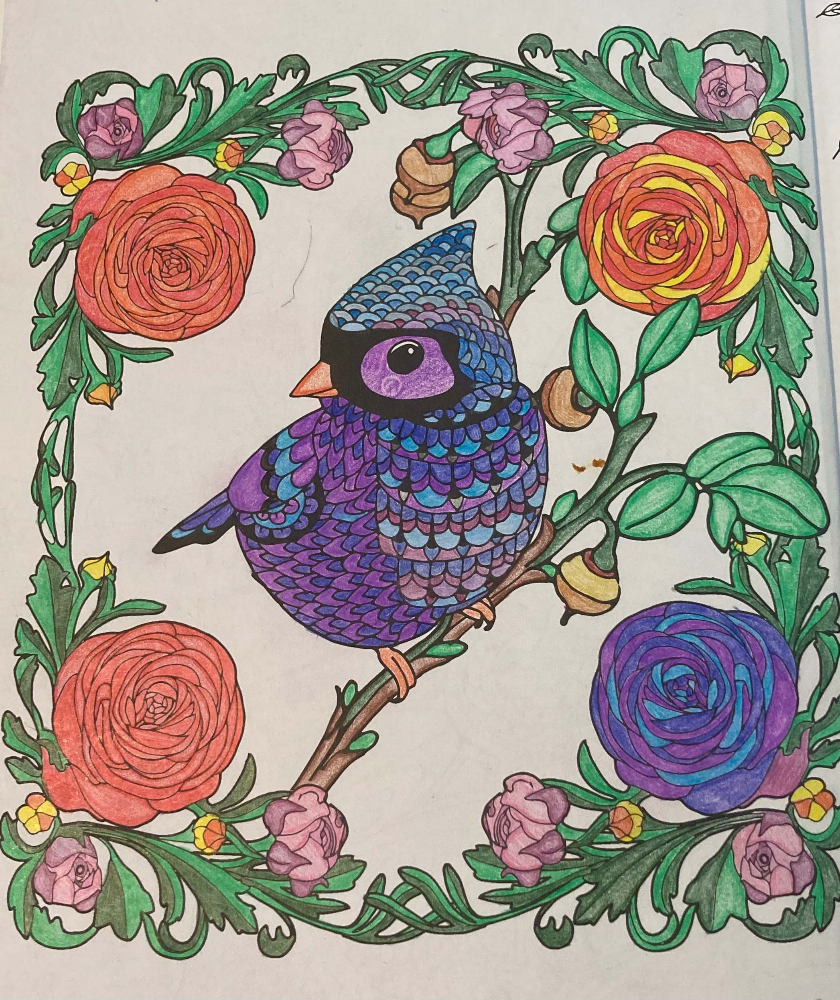
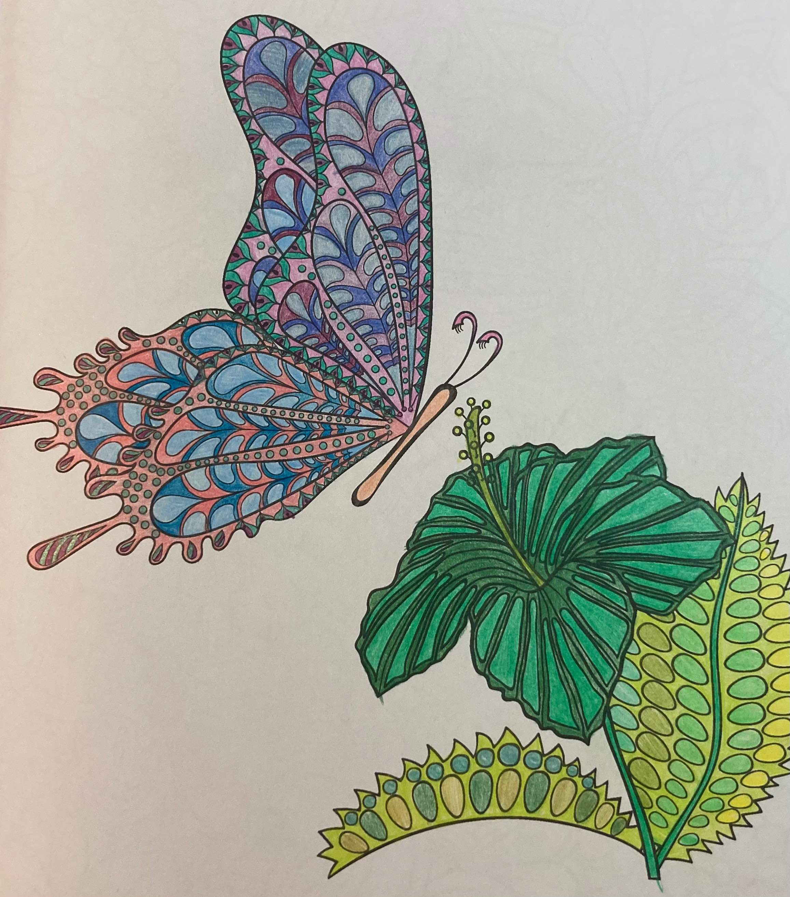
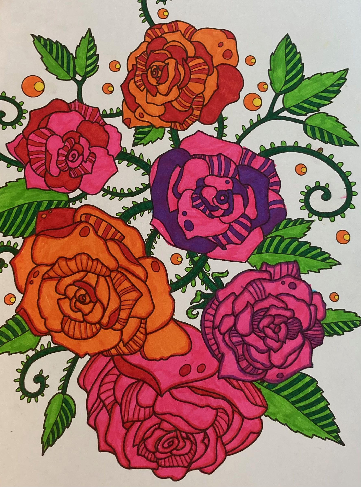
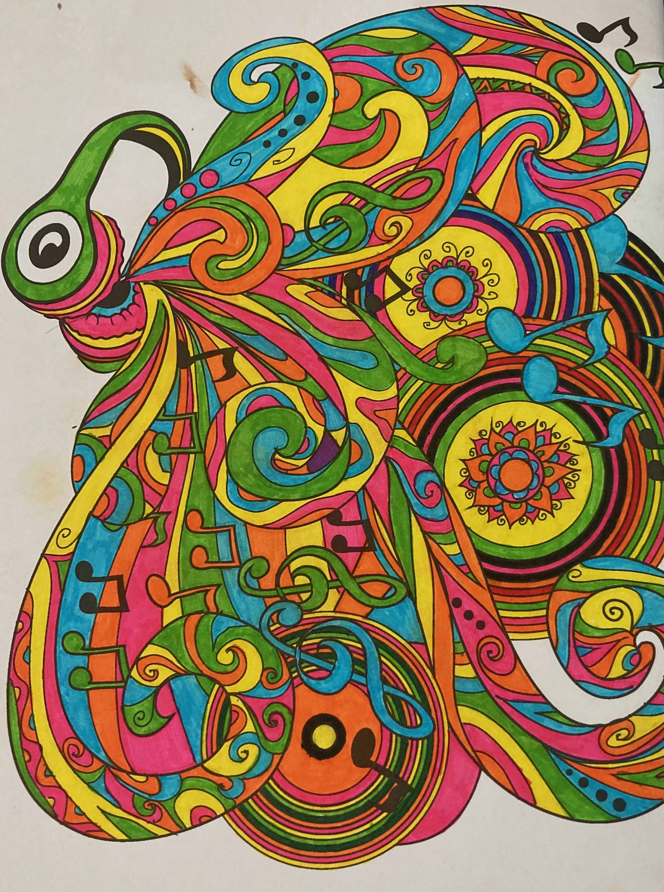

About Andi
I am Andrea Folgado, from Cape Town, South Africa and I have been living in London for the past year. I have spent the majority of this year studying as I would like to career change into Software Engineering, starting as a Junior Software Developer. Although I love Cape Town, I moved to the UK as I would love to travel around the UK and Europe, and to spend more time with my family in the UK, Portugal and Switzerland. I would, especially, love to see my grandmother (in Portugal), give her a hug and to spend some time with her person. I love learning and I'm interested in both Medicinal and Psycological healthcare.
Things I enjoy
Board games
Memoir44
  There are a few things I enjoy about this game:
- As you play the various game scenarios, you're taken through history itself.
- You're given a limited hand of options each round, which encourages you to strategize whilst simultaneously narrowing the options to prevent analysis paralysis.
- The element of luck highlights the challenges of war, where good strategies don't always lead to the intended results.
- Due to the nature of the game, you have to think on your feet in the moment and do the best you can with what you've got.
Colouring in
  
YouTube
YouTube the prominent entertainment provider, with an abundance of content of our age. Here are a few YouTubers I personally follow: